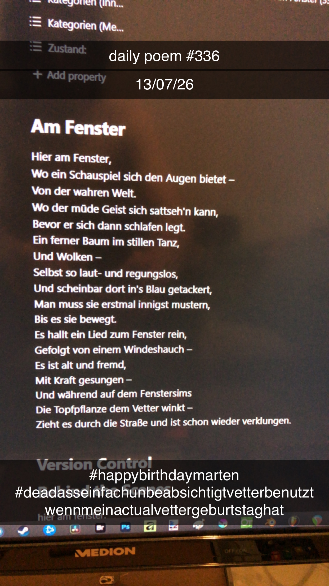

Am Fenster
[336]Hier am Fenster,
Wo ein Schauspiel sich den Augen bietet –
Von der wahren Welt.
Wo der müde Geist sich sattseh'n kann,
Bevor er sich dann schlafen legt.
Ein ferner Baum im stillen Tanz,
Und Wolken –
Selbst so laut- und regungslos,
Und scheinbar starr in's Blau gepinselt,
Der Blick, er muss erst innig werden,
Bis es sie bewegt.
Es hallt ein Lied zum Fenster rein,
Auf einem losen Windeshauch –
Es ist alt und fremd,
Mit Kraft gesungen –
Und während auf dem Fenstersims
Die Topfpflanze dem Vetter winkt –
Zieht es durch die Straße und ist schon wieder verklungen.
